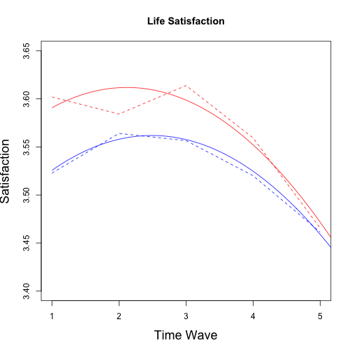
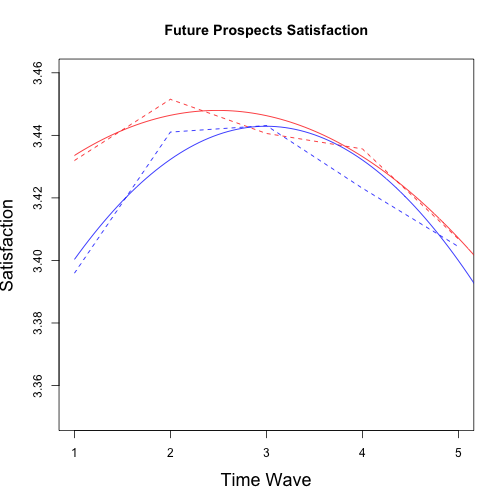
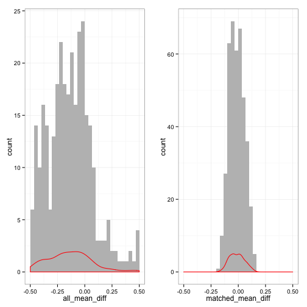
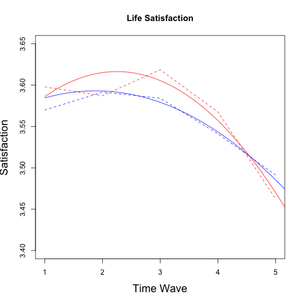
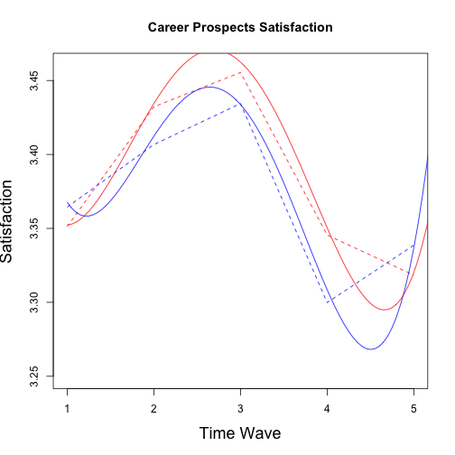
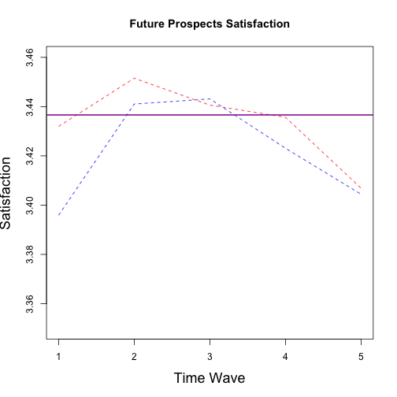

Contents:
Initial data-munging was done using a series of SQL queries. For direct further education entrants we took those who indicated that they had finished year 12 the year before and indicated that they were currently undertaking some form of teriary study. Gap-year students were derived by taking those who had completed year 12 the year before and indicated that they had defered further education and/or confirmed the following year that they had defered further education in the year previous.
Further education dropouts were taking by exploring if in any of the years under investigation they indicated they had withdrawn from their teriary education course. Gap-year returners composed those who had, at any time during the period of investigation indicated that they currently undertaking teriary education. SQL queries underlying theis subsetting are in .Rmd file associated with this file.
## Loading required package: DBI
## [1] "META1995" "META1998" "META2003" "Student1995" "Student1998"
## [6] "Student2003"
The number of adolescence who directly entered university after high-school was 1723. The number of adolescents that took a gap-year (offered further education but defered) was 505.
The PISA database consistst on individuals who are the same age but may be in a veriety of year in school grades. In the current research we wanted to compare individuals in terms of years since high-school graduation rather than age in years. As such, we needed to rearrange the data.
The Satisfaction Items are (How satisfied are you with):
Items in bold are the ones used in the analysis.
## [1] "matching Features"
## Variable Label
## 2 stateid State/Territory
## 4 schoolid School ID
## 7 loc MCEETYA Loc Class
## 8 sex Sex of respondent
## 9 indig Final Indig Status
## 385 sisced Expected educational level of student (ISCED)
## 395 escs Economic social cultural status
## 398 belong Sense of belonging to school (WLE)
## 399 intmat Interest in mathematics (WLE)
## 400 instmot Instrumental motivation in mathematics (WLE)
## 401 matheff Mathematics self-efficacy (WLE)
## 402 anxmat Mathematics anxiety (WLE)
## 403 scmat Mathematics self-concept (WLE)
## 407 complrn Competitive learning (WLE)
## 408 cooplrn Co-operative learning (WLE)
## 409 teachsup Teacher support in maths lessons (WLE)
## 410 disclim Disciplinary climate in maths lessons (WLE)
## 432 laa005 A5 Respondent post-school plans
## 433 laa006 A6 Parent post-school aspirations
## 434 laa007 A7 Peer post-school expectations
## 670 laa025 A25 Self-assessment of literacy (English)
## 671 laa026 A26 Self-assessment of numeracy (Mathematics)
## 672 laa027 A27 Overall self-assessment
## 729 lad001 D1 Currently working
## 5196 xcsl2003 Derived: XCSL2003 Current school level
## 5364 xath2003 Derived: XATH2003 Living with parent(s)
## 10 pv1math Plausible value in math
## 15 pv1math1 Plausible value in math - Space and Shape
## 20 pv1math2 Plausible value in math- Change and Relationships
## 25 pv1math3 Plausible value in math - Uncertainty
## 30 pv1math4 Plausible value in math - Quantity
## 35 pv1read Plausible value in reading
## 40 pv1scie Plausible value in science
## 45 pv1prob Plausible value in problem solving
## 238 st30q01 Attitude enjoy reading Q30a
## 239 st30q02 Attitude effort Q30b
## 240 st30q03 Attitude look forward Q30c
## 241 st30q04 Attitude enjoy Maths Q30d
## 242 st30q05 Attitude career Q30e
## 243 st30q06 Attitude interested Q30f
## 244 st30q07 Attitude further study Q30g
## 245 st30q08 Attitude job Q30h
Percentage of missing data:
## id W1WORK W1LEISURE W1GET.ALONG W1WAGE
## 0.000 0.008 0.007 0.007 0.012
## W1SOCIAL W1INDEPENDENCE W1CAREER.PROS W1FUTURE.PROS W1HOME.LIFE
## 0.006 0.007 0.018 0.018 0.007
## W1LIVE.STAND lbj003k lbj003l W1RESIDENCE W1LIFE.SAT
## 0.007 0.039 0.104 0.007 0.008
## W2WORK W2LEISURE W2GET.ALONG W2WAGE W2SOCIAL
## 0.004 0.001 0.000 0.008 0.000
## W2INDEPENDENCE W2CAREER.PROS W2FUTURE.PROS W2HOME.LIFE W2LIVE.STAND
## 0.001 0.007 0.012 0.001 0.000
## W2RESIDENCE W2LIFE.SAT W3WORK W3LEISURE W3GET.ALONG
## 0.000 0.001 0.004 0.001 0.002
## W3WAGE W3SOCIAL W3INDEPENDENCE W3CAREER.PROS W3FUTURE.PROS
## 0.002 0.002 0.001 0.012 0.010
## W3HOME.LIFE W3LIVE.STAND W3RESIDENCE W3LIFE.SAT W4WORK
## 0.002 0.001 0.000 0.002 0.092
## W4LEISURE W4GET.ALONG W4WAGE W4SOCIAL W4INDEPENDENCE
## 0.088 0.087 0.090 0.088 0.087
## W4CAREER.PROS W4FUTURE.PROS W4HOME.LIFE W4LIVE.STAND lej005k
## 0.094 0.092 0.088 0.087 0.119
## lej005l W4RESIDENCE W4LIFE.SAT W5WORK W5LEISURE
## 0.149 0.088 0.088 0.131 0.130
## W5GET.ALONG W5WAGE W5SOCIAL W5INDEPENDENCE W5CAREER.PROS
## 0.129 0.132 0.130 0.131 0.140
## W5FUTURE.PROS W5HOME.LIFE W5LIVE.STAND lfj003k lfj003l
## 0.139 0.132 0.129 0.167 0.197
## W5RESIDENCE W5LIFE.SAT W6WORK W6LEISURE W6GET.ALONG
## 0.130 0.130 0.198 0.196 0.194
## W6WAGE W6SOCIAL W6INDEPENDENCE W6CAREER.PROS W6FUTURE.PROS
## 0.194 0.194 0.194 0.199 0.199
## W6HOME.LIFE W6LIVE.STAND lgj010k lgj010l W6RESIDENCE
## 0.194 0.194 0.211 0.232 0.196
## W6LIFE.SAT W7WORK W7LEISURE W7GET.ALONG W7WAGE
## 0.196 0.263 0.261 0.261 0.264
## W7SOCIAL W7INDEPENDENCE W7CAREER.PROS W7FUTURE.PROS W7HOME.LIFE
## 0.261 0.260 0.265 0.265 0.260
## W7LIVE.STAND lhj001k lhj001l W7RESIDENCE W7LIFE.SAT
## 0.260 0.283 0.294 0.261 0.261
## W1STATUS W2STATUS W3STATUS W4STATUS W5STATUS
## 0.005 0.000 0.021 0.102 0.140
## W6STATUS group stateid schoolid loc
## 0.206 0.000 0.000 0.000 0.000
## sex sisced indig laa005 laa006
## 0.000 0.000 0.000 0.000 0.000
## escs laa007 laa025 laa026 laa027
## 0.004 0.000 0.000 0.000 0.000
## xcsl2003 lad001 xath2003 belong intmat
## 0.000 0.000 0.000 0.001 0.001
## instmot matheff anxmat scmat complrn
## 0.001 0.000 0.001 0.001 0.000
## cooplrn teachsup disclim pv1math pv1math1
## 0.001 0.000 0.001 0.000 0.000
## pv1math2 pv1math3 pv1math4 pv1read pv1scie
## 0.000 0.000 0.000 0.000 0.000
## pv1prob st30q01 st30q02 st30q03 st30q04
## 0.000 0.002 0.003 0.008 0.006
## st30q05 st30q06 st30q07 st30q08
## 0.002 0.005 0.002 0.004
## Pre-existing differences on matching variables:
## Group Diff (SD Units) t_value Significance
## W1WORK 0.0423292 0.80173
## W1LEISURE -0.0597375 -1.15799
## W1GET.ALONG -0.0154605 -0.30484
## W1WAGE -0.0172959 -0.33611
## W1SOCIAL -0.0786574 -1.52074
## W1INDEPENDENCE -0.1083763 -2.11928 *
## W1CAREER.PROS 0.0633206 1.21527
## W1FUTURE.PROS -0.0096553 -0.18671
## W1HOME.LIFE -0.0572795 -1.13518
## W1LIVE.STAND -0.0773963 -1.52578
## lbj003k 0.0448033 0.82041
## lbj003l 0.0079558 0.15081
## W1RESIDENCE -0.0195720 -0.37747
## W1LIFE.SAT -0.0965960 -1.92468
## W2WORK 0.0802062 1.51447
## W2LEISURE -0.0585724 -1.15188
## W2GET.ALONG -0.1321507 -2.68731 *
## W2WAGE 0.0936169 1.82999
## W2SOCIAL -0.1246597 -2.50461 *
## W2INDEPENDENCE 0.0055059 0.10823
## W2CAREER.PROS 0.1244445 2.47189 *
## W2FUTURE.PROS 0.0009047 0.01782
## W2HOME.LIFE 0.0161713 0.31818
## W2LIVE.STAND 0.0005895 0.01151
## W2RESIDENCE 0.0094328 0.18419
## W2LIFE.SAT 0.0160191 0.31888
## W3WORK 0.0341866 0.61110
## W3LEISURE -0.1282585 -2.58317 *
## W3GET.ALONG -0.1887982 -3.81479 *
## W3WAGE -0.0713672 -1.41442
## W3SOCIAL -0.0603746 -1.19190
## W3INDEPENDENCE -0.1809012 -3.58326 *
## W3CAREER.PROS 0.0272382 0.53730
## W3FUTURE.PROS -0.0633346 -1.21218
## W3HOME.LIFE -0.1177495 -2.33902 *
## W3LIVE.STAND -0.0768407 -1.51365
## W3RESIDENCE -0.0322919 -0.64524
## W3LIFE.SAT -0.1542453 -3.11274 *
## escs -0.1404837 -2.93409 *
## laa007 -0.1382104 -2.59364 *
## laa025 -0.0865514 -1.73553
## laa026 -0.1690189 -3.22302 *
## laa027 -0.0992775 -1.89248
## lad001 -0.2100516 -4.14030 *
## belong -0.0216606 -0.42639
## intmat 0.2027070 4.15895 *
## instmot 0.1871466 3.71959 *
## matheff 0.0960648 1.90415
## anxmat -0.0631447 -1.32567
## scmat 0.2013838 3.96249 *
## complrn 0.2316211 4.62418 *
## cooplrn 0.0868194 1.74257
## teachsup 0.0407558 0.81401
## disclim 0.1013487 2.02878 *
## pv1math 0.0613792 1.22616
## pv1math1 0.0561797 1.10524
## pv1math2 0.1026167 2.06822 *
## pv1math3 0.0588810 1.17513
## pv1math4 0.0824722 1.67138
## pv1read -0.0059574 -0.11860
## pv1scie -0.0217969 -0.43558
## pv1prob 0.0439934 0.87677
## st30q01 -0.2489050 -5.04007 *
## st30q02 -0.1295554 -2.52539 *
## st30q03 -0.2152187 -4.36486 *
## st30q04 -0.1892365 -3.78368 *
## st30q05 -0.1427853 -2.76070 *
## st30q06 -0.0772326 -1.56443
## st30q07 -0.1782090 -3.46469 *
## st30q08 -0.1690394 -3.39482 *
#not run
#load parallel backend
library(snowfall)
#initiate number of cores you want to use
sfInit(parallel=TRUE, cpus=5)
#exports amelia library to all the clusters
sfLibrary(Amelia)
#export any object you want each of the clusters to have access to
sfExport("data")
#wrap what you want parallel in a function
MIdata <- sfLapply(1:5, function(x){
amelia(data, m=1, idvars=c("schoolid", "id", "stateid", "loc", "xath2003", "W1STATUS", "W2STATUS"),
noms=c("W3STATUS","W4STATUS","W5STATUS","W6STATUS")
)
}
)
sfStop()
dataMI <- lapply(MIdata, function(x) x$imputations$imp1)
##########################
#School average variables#
##########################
schAvg <- lapply( dataMI, function(x) aggregate(cbind(escs,pv1math, pv1read, pv1scie, pv1prob)~schoolid, data=x,
mean)
)
for (i in 1:5){names(schAvg[[i]]) <- c("schoolid", "Sses","Smath","Sread","Sscie","Sprob")}
for (i in 1:5){ dataMI[[i]] <- merge(dataMI[[i]], schAvg[[i]], by="schoolid")}
save(dataMI, file="2003Imputed.RData")
rm("dataMI")
## Loading required package: MASS
## Loading required package: Matrix
## Loading required package: lme4
## Loading required package: Rcpp
##
## arm (Version 1.6-10, built: 2013-11-15)
##
## Working directory is /Users/phparker/Dropbox/Projects_Research/gapyear/gapyear
##
##
## Attaching package: 'arm'
##
## The following object is masked from 'package:car':
##
## logit
##
## Loading required package: ggplot2
## Loading required package: MatchIt
## First year post univeristy
## ============================
## Univeristy enrolment
## ------------------
## Direct Gap
## Commenced 1723 344
## Dropped out 0 13
## Not commenced 0 148
## Std. residuals: Cell
## ------------------
## Direct Gap
## Commenced 24.331 -24.331
## Dropped out -6.677 6.677
## Not commenced -23.254 23.254
## p-value: 0.0004998
## Second year post univeristy
## ===========================
## Univeristy enrolment
## ------------------
## Direct Gap
## Commenced 1560.6 344.0
## Completed 3.8 0.6
## Dropped out 4.8 13.8
## Not commenced 153.8 146.6
## Std. residuals: Cell
## ------------------
## [,1] [,2]
## [1,] 12.5992 -12.5992
## [2,] 0.4995 -0.4995
## [3,] -5.3671 5.3671
## [4,] -11.6327 11.6327
## p-value: 0.0004998
## Third year post univeristy
## ===========================
## Univeristy enrolment
## ------------------
## Direct Gap
## Commenced 1459.0 333.6
## Completed 46.4 18.0
## Further Study 7.6 2.8
## Dropped out 9.0 24.4
## Not commenced 201.0 126.2
## Std. residuals: Cell
## ------------------
## Direct Gap
## Commenced 9.2779 -9.2779
## Completed -1.0198 1.0198
## Further Study -0.3885 0.3885
## Dropped out -6.9845 6.9845
## Not commenced -7.4367 7.4367
## p-value: 0.0004998
## Fourth year post univeristy
## ===========================
## Univeristy enrolment
## ------------------
## Direct Gap
## Commenced 944.2 213.8
## Completed 434.6 125.2
## Further Study 134.8 33.8
## Dropped out 54.4 38.0
## Not commenced 155.0 94.2
## Std. residuals: Cell
## ------------------
## Direct Gap
## Commenced 4.9299 -4.9299
## Completed 0.1968 -0.1968
## Further Study 0.8486 -0.8486
## Dropped out -4.3244 4.3244
## Not commenced -6.0554 6.0554
## p-value: 0.0004998
top CFA Growth - Life Satisfaction
## No growth vs. Linear
## chi: 60.37 ; df:2; p-value: 1.605e-12
## Linear vs. Quadratic
## chi: 55.4 ; df:2; p-value: 5.814e-11
## Quadratic vs. Cubic
## chi: 3.297 ; df:2; p-value: 0.2542
## Cubic vs. Quartic
## chi: 1.503 ; df:2; p-value: 0.5556
## Multiple imputation results:
## MIcombine.default(betas, vars2)
## results se (lower upper) missInfo
## (Intercept) 3.4606967 0.022016 3.41754 3.50386 3 %
## wave 0.0813027 0.015682 0.05055 0.11206 4 %
## group 0.0755141 0.048375 -0.01966 0.17068 12 %
## I(wave^2) -0.0163273 0.002582 -0.02139 -0.01126 6 %
## wave:group -0.0098441 0.035604 -0.08032 0.06063 19 %
## group:I(wave^2) -0.0005434 0.005847 -0.01213 0.01104 20 %

## No growth vs. Linear
## chi: 23.96 ; df:2; p-value: 5.693e-05
## Linear vs. Quadratic
## chi: 34.74 ; df:2; p-value: 1.075e-06
## Quadratic vs. Cubic
## chi: 31.17 ; df:2; p-value: 4.501e-07
## Cubic vs. Quartic
## chi: 28.08 ; df:2; p-value: 1.847e-05
## Multiple imputation results:
## MIcombine.default(betas, vars2)
## results se (lower upper) missInfo
## (Intercept) 3.938823 0.206495 3.52783 4.34981 24 %
## wave -1.214167 0.380618 -1.97244 -0.45590 25 %
## group -0.359440 0.441149 -1.24079 0.52191 27 %
## I(wave^2) 0.845665 0.229190 0.38860 1.30273 26 %
## I(wave^3) -0.226104 0.055289 -0.33646 -0.11574 27 %
## I(wave^4) 0.020147 0.004612 0.01094 0.02936 27 %
## wave:group 0.636200 0.814495 -0.99334 2.26574 28 %
## group:I(wave^2) -0.373992 0.490465 -1.35635 0.60837 29 %
## group:I(wave^3) 0.092069 0.118456 -0.14549 0.32963 30 %
## group:I(wave^4) -0.008001 0.009909 -0.02790 0.01190 31 %
## No growth vs. Linear
## chi: 1.203 ; df:2; p-value: 0.5782
## Linear vs. Quadratic
## chi: 16.71 ; df:2; p-value: 0.001523
## Quadratic vs. Cubic
## chi: 1.974 ; df:2; p-value: 0.482
## Cubic vs. Quartic
## chi: 0.2884 ; df:2; p-value: 0.8882
## Multiple imputation results:
## MIcombine.default(betas, vars2)
## results se (lower upper) missInfo
## (Intercept) 3.346916 0.025336 3.296938 3.396895 15 %
## wave 0.064082 0.019087 0.026108 0.102056 24 %
## group 0.060824 0.054700 -0.047586 0.169233 21 %
## I(wave^2) -0.010695 0.003194 -0.017082 -0.004308 28 %
## wave:group -0.031779 0.042432 -0.117353 0.053796 34 %
## group:I(wave^2) 0.004211 0.007018 -0.009986 0.018408 35 %

## Matching equation used was:
## group ~ W1WORK + W1LEISURE + W1GET.ALONG + W1WAGE + W1SOCIAL + W1INDEPENDENCE + W1CAREER.PROS + W1FUTURE.PROS + W1HOME.LIFE + W1LIVE.STAND + lbj003k + lbj003l + W1RESIDENCE + W1LIFE.SAT + W2WORK + W2LEISURE + W2GET.ALONG + W2WAGE + W2SOCIAL + W2INDEPENDENCE + W2CAREER.PROS + W2FUTURE.PROS + W2HOME.LIFE + W2LIVE.STAND + W2RESIDENCE + W2LIFE.SAT + W3WORK + W3LEISURE + W3GET.ALONG + W3WAGE + W3SOCIAL + W3INDEPENDENCE + W3CAREER.PROS + W3FUTURE.PROS + W3HOME.LIFE + W3LIVE.STAND + W3RESIDENCE + W3LIFE.SAT + sex + sisced + indig + laa005 + laa006 + escs + laa007 + laa025 + laa026 + laa027 + xcsl2003 + lad001 + belong + intmat + instmot + matheff + anxmat + scmat + complrn + cooplrn + teachsup + disclim + pv1math + pv1math1 + pv1math2 + pv1math3 + pv1math4 + pv1read + pv1scie + pv1prob + st30q01 + st30q02 + st30q03 + st30q04 + st30q05 + st30q06 + st30q07 + st30q08 + Sses + Smath + Sread + Sscie + Sprob
## R Version: R version 3.0.2 (2013-09-25)
## Library MatchIt loaded.
## Largest cohen's d differences for each imputation:
## ---------------------------------------------
## $m_mean_diff
## [1] -0.1894 -0.1343 0.1026 0.1010 0.1004
##
## $m_mean_diff
## [1] 0.1117 -0.1049
##
## $m_mean_diff
## [1] -0.1517 -0.1118 0.1038 -0.1006
##
## $m_mean_diff
## [1] -0.1012
##
## $m_mean_diff
## [1] 0.1295 -0.1080 0.1019
## Plot of mean differences pre and post matching

## cohen's d differences pre-matching:
## Large Medium Small
## 175.8 301.0 3008.2
## cohen's d differences post-matching:
## [1] 3485
## Total sample size: 1666
## Group sample size:
## 1183 482.4
## First year post univeristy
## ============================
## Univeristy enrolment
## ------------------
## Direct Gap
## Commenced 482.4 329.0
## Dropped out 0.0 11.6
## Not commenced 0.0 141.8
## Std. residuals: Cell
## ------------------
## Direct Gap
## Commenced 13.50 -13.50
## Dropped out -3.42 3.42
## Not commenced -12.89 12.89
## p-value: 0.0004998
## Second year post univeristy
## ===========================
## Univeristy enrolment
## ------------------
## Direct Gap
## Commenced 425.6 329.8
## Completed 2.0 0.6
## Dropped out 1.0 13.8
## Not commenced 53.8 138.2
## Std. residuals: Cell
## ------------------
## [,1] [,2]
## [1,] 7.4851 -7.4851
## [2,] 0.9132 -0.9132
## [3,] -3.3578 3.3578
## [4,] -6.8100 6.8100
## p-value: 0.0004998
## Third year post univeristy
## ===========================
## Univeristy enrolment
## ------------------
## Direct Gap
## Commenced 403.2 320.4
## Completed 12.4 17.8
## Further Study 1.8 2.8
## Dropped out 2.8 22.8
## Not commenced 62.2 118.6
## Std. residuals: Cell
## ------------------
## Direct Gap
## Commenced 6.1599 -6.1599
## Completed -0.9869 0.9869
## Further Study -0.5871 0.5871
## Dropped out -4.0021 4.0021
## Not commenced -4.6590 4.6590
## p-value: 0.0004998
## Fourth year post univeristy
## ===========================
## Univeristy enrolment
## ------------------
## Direct Gap
## Commenced 266.8 202.6
## Completed 116.6 121.2
## Further Study 39.4 33.6
## Dropped out 14.2 36.0
## Not commenced 45.4 89.0
## Std. residuals: Cell
## ------------------
## Direct Gap
## Commenced 4.1364 -4.1364
## Completed -0.3462 0.3462
## Further Study 0.7080 -0.7080
## Dropped out -3.1625 3.1625
## Not commenced -4.0626 4.0626
## p-value: 0.0004998
## No growth vs. Linear
## chi: 75.38 ; df:2; p-value: 3.73e-14
## Linear vs. Quadratic
## chi: 30.52 ; df:2; p-value: 1.644e-05
## Quadratic vs. Cubic
## chi: 3.027 ; df:2; p-value: 0.2686
## Cubic vs. Quartic
## chi: 1.167 ; df:2; p-value: 0.6391
## Multiple imputation results:
## MIcombine.default(betas, vars2)
## results se (lower upper) missInfo
## (Intercept) 3.554056 0.029316 3.496e+00 3.612358 24 %
## wave 0.041538 0.020864 -9.719e-06 0.083085 25 %
## group -0.035794 0.054303 -1.437e-01 0.072161 23 %
## I(wave^2) -0.011051 0.003470 -1.799e-02 -0.004113 28 %
## wave:group 0.045626 0.042168 -4.016e-02 0.131407 38 %
## group:I(wave^2) -0.008311 0.007143 -2.299e-02 0.006372 43 %

## No growth vs. Linear
## chi: 18.99 ; df:2; p-value: 0.0004306
## Linear vs. Quadratic
## chi: 32.24 ; df:2; p-value: 9.153e-06
## Quadratic vs. Cubic
## chi: 20.32 ; df:2; p-value: 8.971e-05
## Cubic vs. Quartic
## chi: 16.44 ; df:2; p-value: 0.002261
## Multiple imputation results:
## MIcombine.default(betas, vars2)
## results se (lower upper) missInfo
## (Intercept) 3.847870 0.252364 3.343772 4.35197 27 %
## wave -1.030895 0.470153 -1.973389 -0.08840 30 %
## group -0.237482 0.482323 -1.207566 0.73260 32 %
## I(wave^2) 0.730410 0.284557 0.158585 1.30224 31 %
## I(wave^3) -0.197258 0.068855 -0.335873 -0.05864 32 %
## I(wave^4) 0.017665 0.005755 0.006063 0.02927 33 %
## wave:group 0.394397 0.886452 -1.389156 2.17795 32 %
## group:I(wave^2) -0.222149 0.531387 -1.291346 0.84705 32 %
## group:I(wave^3) 0.054586 0.127959 -0.203026 0.31220 32 %
## group:I(wave^4) -0.004833 0.010682 -0.026360 0.01669 33 %

## No growth vs. Linear
## chi: 4.254 ; df:2; p-value: 0.1896
## Linear vs. Quadratic
## chi: 6.345 ; df:2; p-value: 0.08146
## Quadratic vs. Cubic
## chi: 1.418 ; df:2; p-value: 0.6013
## Cubic vs. Quartic
## chi: 0.7777 ; df:2; p-value: 0.7405
## Multiple imputation results:
## MIcombine.default(betas, vars2)
## results se (lower upper) missInfo
## (Intercept) 3.4367483 0.01211 3.41272 3.46077 22 %
## group -0.0003592 0.02125 -0.04219 0.04147 13 %
